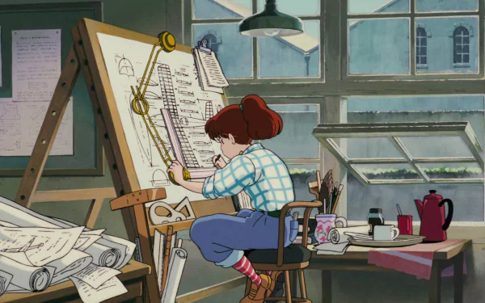
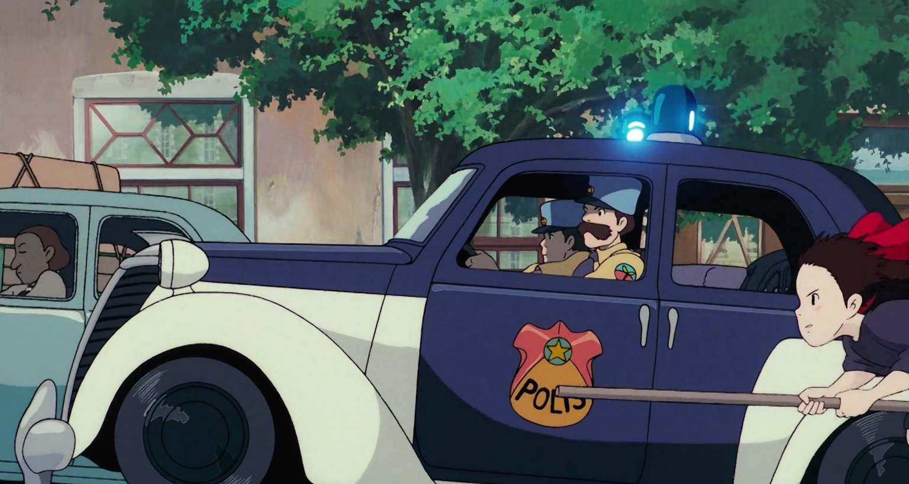

Digitale Hoofdkwartier
Dit is de plek waar alles samenkomt en georganiseerd wordt. Denk aan het hoofdkwartier van een team of organisatie.
Jouw digitale hoofdkwartier is dus jouw persoonlijke, slimme en overzichtelijke plek waar je al je schoolbestanden bewaart, ordent en terugvindt. Geen chaos meer op je bureaublad, maar een systeem dat werkt.
Je missie
Welkom, digitale agent.
Vanaf vandaag start je met je eerste missie. Jouw taak is eenvoudig, maar belangrijk: je bouwt een digitaal hoofdkwartier waarin je al je schoolwerk kan bewaren, terugvinden en veilig organiseren.
Klasdiscussie
Stap 1: Infiltreer de cloud
Er is een probleem: digitale bestanden raken vaak kwijt, staan op de verkeerde plaats of zijn niet goed beveiligd. Aan jou om dit mysterie op te lossen.
Je krijgt een korte onderzoeksmissie. Je werkt zelfstandig en gaat op ontdekking in de wereld van de cloud en bestandsopslag. Door goed na te denken en de vragen in te vullen, verzamel je de informatie die je nodig hebt om straks je eigen slimme en veilige digitale werkplek te bouwen.
Succes, agent. De cloud wacht op je!
Opdracht
Stap 2: Bouw je Digitale hoofdkwartier
Agent, je onderzoek is geslaagd.
Nu is het tijd om je kennis om te zetten in actie.
Dit is de mappenstructuur die we zo meteen gaan bouwen in Google Drive:
School
└── Seminarie IT
├── Opdrachten
│ ├── Bezig
│ └── Afgewerkt
└── Back-ups
Wat betekent map?
| Map | Functie |
|---|---|
Opdrachten/Bezig |
Hier werk je aan opdrachten die nog niet klaar zijn |
Opdrachten/Afgewerkt |
Alles wat volledig afgewerkt is |
Back-ups |
Reservekopieën van belangrijke bestanden |
1. Je hebt net je taak voor Engels ingediend via Smartschool en de leerkracht heeft het verbeterd. Wat doe je nu met je Word-document?
Je verplaatst het document van Opdrachten/Bezig naar Opdrachten/Afgewerkt. De taak is helemaal afgerond, maar je gooit hem niet weg. Als je later moet studeren voor het examen, kun je je taak hier snel terugvinden om te herhalen.
2. In welke map zet je een toets voor Frans waar je volgende week voor moet studeren?
In deze structuur hoort een taak of toets waar je nog mee bezig bent (of voor moet leren) in de map Opdrachten/Bezig. Pas als de toets voorbij is en je er niets meer voor hoeft te doen, verplaats je deze naar Opdrachten/Afgewerkt. Het is slim om deze mappenstructuur straks voor al je schoolvakken te gebruiken!
3. Je hebt uren gewerkt aan een heel belangrijke opdracht. Je wil er absoluut zeker van zijn dat je dit niet kwijtraakt als je computer crasht. In welke map zet je een extra kopie?
Hiervoor gebruik je de map Back-ups. Dit is de veilige zone waar je reservekopieën bewaart van bestanden die je echt niet mag verliezen.
4. Je hebt een Word-document, maar je twijfelt of je het in 'Bezig' of 'Afgewerkt' moet zetten. Waar kijk je naar om te beslissen?
Je kijkt naar de status van de opdracht: Moet ik er nog iets aan aanpassen? Moet de leerkracht het nog nakijken? Is het antwoord ‘ja’, dan is het Bezig. Is het helemaal klaar en hoef je er nooit meer in te werken? Dan is het Afgewerkt.
Stap 3: Kleurcodes
Geef elke map een eigen kleur en gebruik altijd dezelfde kleur per soort map.
Waarom? Omdat kleuren je helpen om sneller te herkennen, minder te moeten zoeken.
Opdracht
- Maak de mappenstructuur na in Google Drive
- Plaats duidelijke screenshots van je gekleurde mappen op een logische plaats in de mappenstructuur.
In een goed georganiseerd hoofdkwartier zie je in één oogopslag waar alles zit
Stap 4: Digitale Survival Gids
Je digitale hoofdkwartier is gebouwd… maar een hoofdkwartier is pas sterk als het goed gebruikt wordt.
Basisregels van elke digitale agent:
- Gebruik duidelijke bestandsnamen
- Werk altijd binnen je mappenstructuur
- Laat je bureaublad niet veranderen in een rommelzone
- Verwijder oude of dubbele bestanden
- Gebruik dezelfde structuur in andere vakken
1. Je hebt een document opgeslagen met de naam `document11.docx`. Volgende maand heb je dit bestand dringend nodig voor een toets. Welke regel is hier niet gevolgd en waarom is dit een probleem?
Je hebt de regel gebruik duidelijke bestandsnamen genegeerd. Aan de naam document11 kun je onmogelijk zien waarover de taak gaat of voor welk vak het is.
Wat zou een betere naam zijn?
2. In je map `Wiskunde` staan de volgende bestanden: `oefeningen.pdf`, `oefeningen_nieuw.pdf`, `oefeningen_echt_nieuw.pdf` en `oefeningen_klaar.pdf`. Welke actie moet je als digitale agent nu ondernemen?
Je moet de regel verwijder oude of dubbele bestanden toepassen. Dit soort namen zorgt voor enorme verwarring. Kijk welk bestand het juiste en meest recente is, geef dat een duidelijke naam en verwijder de oude versies die je niet meer nodig hebt.
CODE 3-2-1
Agent, je Digitale hoofdkwartier is bijna operationeel.
Maar er ontbreekt nog één cruciale verdedigingslaag: data protection.
Zonder back-ups is elke digitale structuur kwetsbaar.
De 3-2-1 back-up regel
Elke digitale agent moet dit protocol kennen en toepassen:
- 3 kopieën van je bestanden
Het originele + 2 extra kopieën - 2 verschillende soorten opslag
Laptop, smartphone, usb-stick, … - 1 externe kopie
Een andere plek of toestel buiten je hoofdwerkplek
Waarom is dit zo belangrijk?
- Je laptop kan crashen of kapot gaan
- Je cloud account kan niet bereikbaar zijn
- Je kan per ongeluk bestanden verwijderen
- Je huis kan afbranden
Maar met het 3-2-1 protocol blijft je werk altijd herstelbaar.
1. Wat gebeurt er met je bestanden als je laptop in het water valt, maar je hebt wél de 3-2-1 regel gebruikt?
Je laptop is dan helaas kapot, maar je bestanden zijn volledig veilig! Omdat je de 3-2-1 regel hebt toegepast, heb je nog minstens twee andere kopieën (bijvoorbeeld op een USB-stick én in de cloud). Je kunt direct op een andere computer inloggen en weer verder aan het werk.
2. Je hebt je taak opgeslagen op je laptop én op een USB-stick. Je laptop zit in je boekentas en je USB-stick steekt in het zijvakje van diezelfde boekentas. Je fietst door een enorme storm en je boekentas wordt volledig doordrenkt met water: je laptop én je USB-stick zijn kapot. Welk deel van de 3-2-1 regel had dit kunnen voorkomen?
Dit had voorkomen kunnen worden door de ‘1’ uit de regel: 1 externe kopie (een kopie op een andere plek). Omdat beide kopieën op exact dezelfde fysieke plek waren (in je boekentas), ben je ze nu allebei kwijt. Als je een derde kopie in de cloud had staan, was er niets aan de hand geweest.
3. Je bent heel goed bezig: je hebt je bestand opgeslagen op je laptop, op de harde schijf van je broer én op de computer van je mama. Je hebt dus 3 kopieën. Plots slaat de bliksem in bij jullie thuis en gaan alle computers in huis tegelijk kapot. Welke fout tegen de 3-2-1 regel is hier gemaakt?
Ook hier is de fout dat er geen externe kopie buiten het huis was. Hoewel je 3 kopieën had op verschillende toestellen, stonden ze allemaal in hetzelfde gebouw. Bij een brand of blikseminslag ben je dan alsnog alles kwijt. Een back-up in de cloud (die in een ander gebouw staat) had dit opgelost.
4. Een hacker blokkeert jouw Google-account en je kunt plotseling niet meer inloggen in je Google Drive-cloud waar al je schoolwerk staat. Gelukkig pas jij de 3-2-1 regel toe. Waarom is dit voor jou geen ramp?
Omdat de regel zegt dat je 2 verschillende soorten opslag moet gebruiken. Je hebt je bestanden niet alléén in de cloud staan, maar je hebt ook een lokale kopie op de harde schijf van je laptop of op een fysieke USB-stick. Je kunt dus gewoon bij je bestanden terwijl Google jouw account herstelt.
Missie: Bouw je eigen 3-2-1 systeem

Agent, je Digitale hoofdkwartier is operationeel…
maar er is nog een kritieke ontbrekende module: data-bescherming.
Vanaf nu werk je niet alleen met mappen en structuur.
Je bouwt een systeem dat je werk kan overleven bij elke ramp.
Je bent nu officieel aangesteld als: Digital Hoofdkwartier System Designer Jouw taak: ontwerp een back-up systeem dat je bestanden altijd veilig houdt, zelfs als alles fout gaat.
Stap 1: Position Check
Opdracht
Maak een nieuw document aan en geef het als naam: 3-2-1-backups.
Voordat je begint, denk even na als echte agent: In welk deel van je digitale hoofdkwartier ga je deze opdracht plaatsen?
Opdrachten/BezigOpdrachten/AfgewerktBack-ups- In een andere map?
Stap 2: Je eigen back-up strategie
Opdracht
Beantwoord in het document deze vragen:
- Waar plaats je jouw originele bestanden?
- Waar zet je je eerste kopie?
- Wanneer maak je deze eerste kopie?
- Wat is je externe back-up?
- Wanneer maak je deze externe backup?
- Hoe zorg je ervoor dat je het maken van back-ups niet vergeet? (routine, checklist, reminder, …)
- Kan je automatisch back-ups maken?
Zip-Bestanden
Wat zijn Zip-bestanden?
Een Zip-bestand is een soort digitale koffer waar je heel veel mappen en bestanden in kunt stoppen. Het heeft twee grote voordelen:
- Alle bestanden zitten samen in één handig bestand (makkelijk om te versturen).
- De computer ‘perst’ de bestanden samen, waardoor het minder opslagruimte (MB’s) inneemt.
Kan je een bestand bewerken terwijl het nog ín een Zip-map zit?
Nee, dat kan niet direct. Als je een bestand inside een zip-map aanpast, worden de wijzigingen vaak niet goed opgeslagen. Je moet de zip-map altijd eerst uitpakken (unzippen of extraheren) voordat je in de bestanden gaat werken.
Smartschool Cloud
Agent, er is nog een verborgen laag in je digitale hoofdkwartier die vaak vergeten wordt.
Naast je eigen cloudopslag bestaat er nog een extra veilige zone: de documenten en uploadzone van Smartschool.
- Alleen jij hebt toegang tot je documenten op smartschool
- Je kan bestanden uit de uploadzone, terug downloaden
Laatste Missie: Smartschool Back-up
Agent, je Digitale HQ is gebouwd.
Je mappenstructuur is operationeel.
Je back-up systeem staat klaar.
Maar… een echte cyberagent stopt nooit zonder een laatste veiligheidscontrole.
Je gaat nu een volledige reservekopie van je digitale hoofdkwartier veiligstellen in de uploadzone van Smartschool.
Opdracht
Missie instructies:
- Download jouw volledige mapstructuur van Google Drive naar je computer.
- Unzip (uitpakken):
Pak het .zip-bestand uit en controleer of alles correct is. - Zip (inpakken):
Maak een nieuw .zip-bestand van je mappenstrucuur en geef het de naamlaatste missie.zip. - Smartschool Upload:
Upload het nieuwe .zip-bestand in de juiste uploadzone.
MISSION COMPLETE!

Je bent nu een echte cyberagent want je hebt:
- Een duidelijke mappenstructuur
- Een cloudwerkplek
- Een lokale kopie
- Een externe reservekopie
- Een volledig actief back-up systeem
Created: 01/06/2026